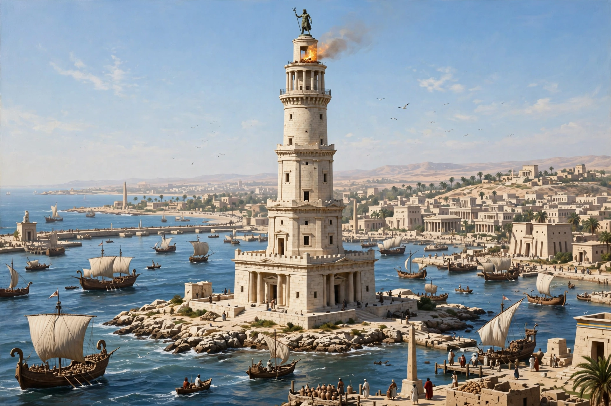

The Lighthouse of Alexandria, also called the Pharos of Alexandria (from the island on which it stood), was a lighthouse built by the Ptolemaic Kingdom of Egypt between 280 and 247 BC on the island of Pharos at the harbor of Alexandria. One of the Seven Wonders of the Ancient World, it stood for more than 1,500 years and became the archetype of all lighthouses — the word "pharos" became the generic term for lighthouse in several languages.

A reconstruction of the Pharos, with its square base, octagonal middle, and cylindrical top.
| Lighthouse of Alexandria | |
| Location | Pharos Island, Alexandria, Egypt |
|---|---|
| Built | c. 280–247 BC |
| Architect | Sostratus of Cnidus (attributed) |
| Commissioned by | Ptolemy I Soter; completed under Ptolemy II |
| Height | Estimated 100 m (330 ft) or more |
| Destroyed | Earthquakes, 956–1323 AD |
The tower was built in three tapering tiers: a square lower section with a central core, an octagonal middle section, and a circular top, crowned by a statue — variously described as of Zeus or Poseidon. A fire burned at the summit, its light projected seaward, tradition says, by polished bronze mirrors; fuel was carried up a broad internal spiral ramp. At over 100 metres (330 ft) it was among the tallest human-made structures of the ancient world.
The Pharos guided ships into Alexandria's busy harbor for centuries under Ptolemaic, Roman, Byzantine, and Arab rule. Damaged by earthquakes in 956 and 1303, it was ruined by the great quake of 1323; the traveler Ibn Battuta reported it impassable by 1349. In 1477 the Mamluk sultan Qaitbay built a citadel on the site, reusing its stone. In 1994 archaeologists discovered massive submerged blocks of the lighthouse in Alexandria's eastern harbor.
The Pharos appears on Roman coins of Alexandria and influenced later towers from Roman lighthouses to medieval minaret design. Its memory anchors Alexandria's civic identity, and it appears on the flag and seal of the Alexandria Governorate and the emblem of Alexandria University.